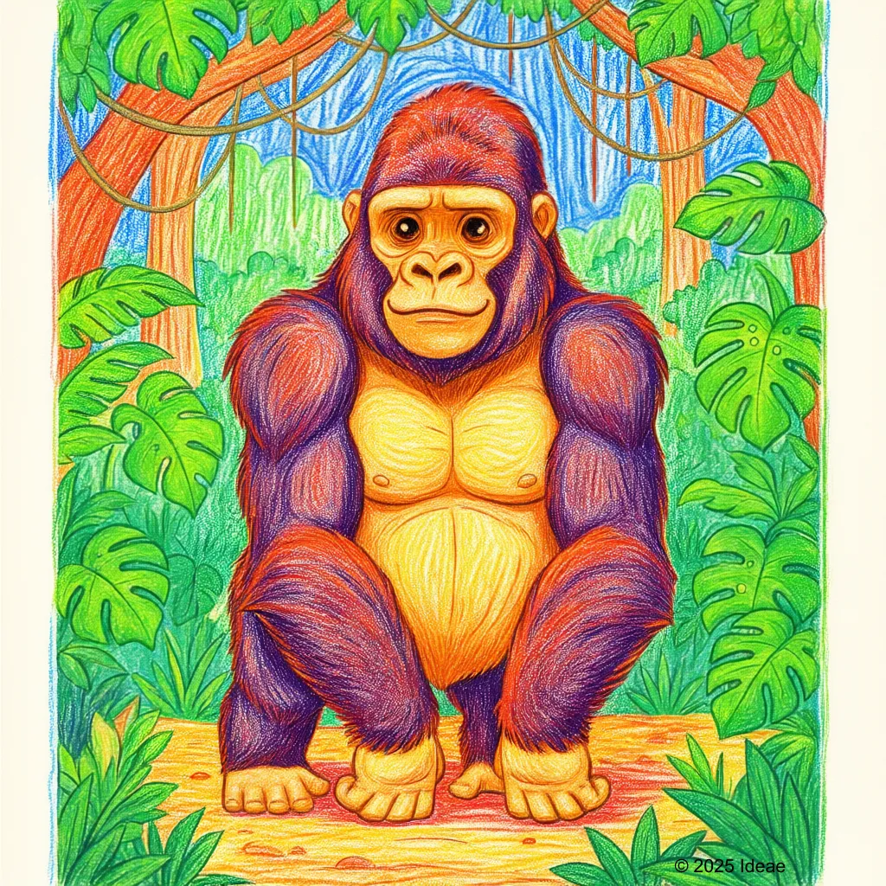

Mountain Gorilla
Gorilla beringei beringei

Key Characteristics
- Gorillas are the largest primates on Earth and are incredibly gentle giants.
- They live in family groups led by a strong male called a 'Silverback' because of the stripe of silver hair on his back.
- Gorillas are mostly peaceful vegetarians, eating lots of leaves, stems, and bamboo.
Peculiar Facts (Fun Facts!)
- Mountain Gorillas share about 98% of their DNA with humans, just like Chimpanzees.
- When a Silverback beats his chest, it's usually a warning sign, not an act of aggression.
- They build a new nest to sleep in every single night, folding branches and leaves into a comfortable bed.